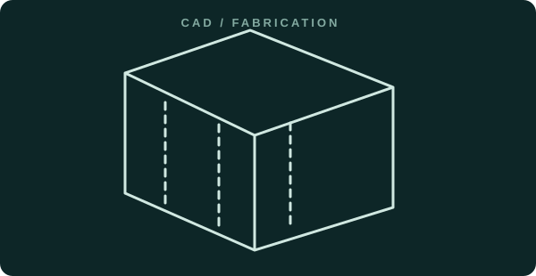

Manufacturing / CAD2024 engineering internship
Maize mill reverse engineering
Measured and reconstructed an approximately one-metre agro-processing mill, developed sheet-metal geometry in SolidWorks, resolved assembly-fit issues, and drafted 15+ fabrication drawings in AutoCAD.
Engineering decisions & scope
Measurement → CAD → fit review → production drawings.
Industrial equipment, manufacturability and documentation.